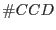
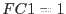

XMM-Newton Science Analysis System
epexposure (epexposure-0.14) [xmmsas_20170112_1337-16.0.0]
A counter in the AUX file is the Discarded Line counter NDSCLIN
(see Table 1). This value comes per quadrant and per  CYCLEs:
In case of full frame, extended full frame and large window modes
NDISCLIN gives the number of discarded columns.
The corresponding livetime factor is
CYCLEs:
In case of full frame, extended full frame and large window modes
NDISCLIN gives the number of discarded columns.
The corresponding livetime factor is
The factor  gives the number of active CCDs in the quadrant under
consideration. Under normal circumstances this should be 3 for the above three
imaging modes. To check for possibly switched off CCDs, however, one needs to
extract the counter An_CCDSEL (see Table 1).
In case of small window, timing, and burst mode there is only one active CCD.
For these modes the onboard MIP rejection is switched off
(all events transmitted, NDSCLIN = 0)
and the equation
reduces to .
XMM-Newton SOC/SSC -- 2017-01-12